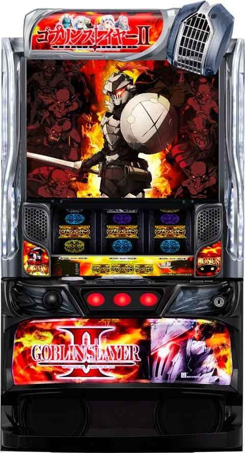
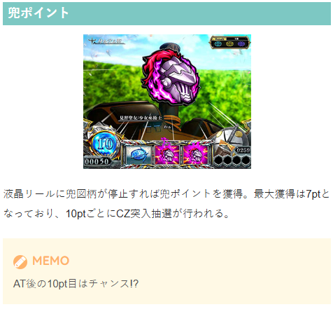
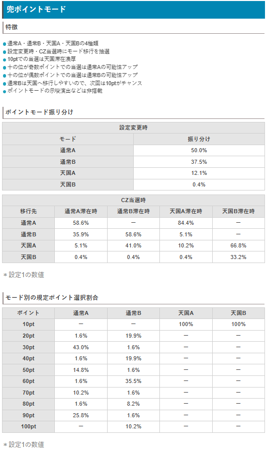
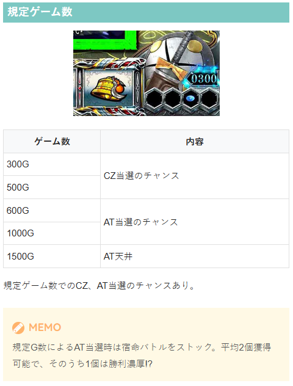
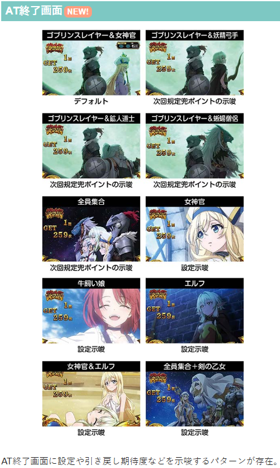
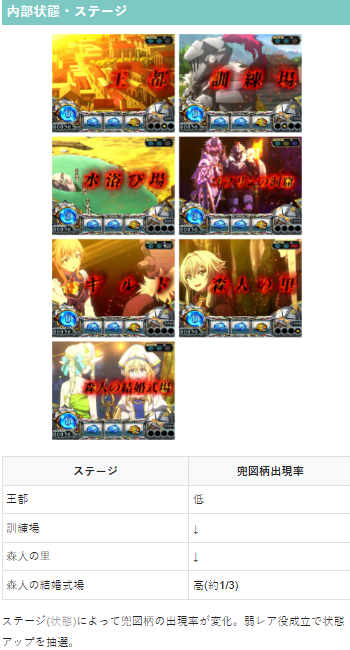

スマスロゴブリンスレイヤーⅡ

【天井情報】
通常時を最大1500G＋α消化でATに当選。
宿命バトルを1〜5個ストックし1個は勝利濃厚という天井恩恵もあり！
天井は600G、1000G、1500Gのいずれかで、1500G以外でも天井恩恵は有効。
設定変更時は天井が1000G＋αに短縮される。
最大6周期でCZに当選!?
【リセット判別】
不明
【有利区間について】
不明
狙い目
【リセット狙い】
320Gから
【ゲーム数天井狙い】
650Gから
【兜ポイント狙い】
100pt天井はCZ当選まで。その他ptは規定pt後にCZ前兆を消化まで。
モード不明時
10pt 8ptから
30pt 27ptから
60pt 56ptから
70pt 68ptから
100pt天井 78ptから
前回モードBのゾーンで当選後
10pt 3ptから
40pt 37ptから
60pt 52ptから
100pt天井 85ptから
【示唆関連の押し引きについて】
AT終了画面
全員集合 兜ポイントからのCZ当選まで
【有利区間関連狙い】
不明
やめ時
上位AT終了後は32Gの引き戻しを確認してヤメ。
それ以外は兜ポイントの示唆等無ければ1G回してアイキャッチ確認してやめ。アイキャッチの詳細は不明。
その他
兜ポイント


規定ゲーム数

AT終了画面

内部状態・ステージ

参考元
かめとうさぎのパチスロブログ
基本情報
- メーカー: JFJ
- 機械割: 97.6% 〜 113.2%
- 導入開始日: 2026年02月02日（月）
- ゲーム性概要: ●おもにレア役と兜ポイントでCZを抽選 ●CZは3種類あり、ゲーム性や期待度が変化 ●ATは純増約2.8枚・100Gのセット継続型で、ラストのJUDGMENTに勝利すれば次セットへ継続 ●AT中はおもに「宿命バトル」を抽選していて、合計3回勝利で上位CZの権利を獲得 ●4回目以降の「宿命バトル」勝利時は上位AT直行のチャンスとなる「闘志一念チャンス」へ ●上位ATは純増が約6.0枚/にパワーアップし、レア役でのゲーム数上乗せ抽選もアリ ●上位AT最終ゲームで「バーサーカーモード」突入の可能性アリ！ ●1/8192で成立する「GOB揃い」も健在！ ※コンプリート機能搭載機


打ち方
打ち方・小役
打ち方（小役狙い）
「最初に狙う絵柄」 通常時は全リールフリー打ちでOKだ。
「レア役の停止例（液晶リール）」
左1stで揃うベルは共通ベル。AT中は押し順ナビを出すケースがあるので、通常時のみ判別できそうだ。
「メインリールの停止例」
変則押しはNG
通常時、押し順ナビなし時は左リール第1停止での消化を推奨する。
確定役
GOB揃い
| 確率 | 1/8192 |
|---|---|
| 通常時の恩恵 | PGSR＋ATストック2個 |
| AT中の恩恵 | PGSR＋ATストック2個 （AT残りゲーム数＋100GがPGSRのゲーム数） |
| 上位AT中の恩恵 | 上位ATゲーム数＋200G |
| 期待枚数 | 1500枚オーバー（通常時） |
※PGSR…PREMIUMゴブリンスレイヤーRUSH
解析情報通常時
小役関連
小役履歴
液晶リール右側の小窓には4G分の小役履歴が表示。履歴内の小役に応じてCZやATが抽選される。
小役履歴での抽選内容
| 役 | 抽選 |
|---|---|
| リプレイ | 3連でCZのチャンス、4連なら!? |
| ベル | 3連でCZのチャンス、4連なら!? |
| 弱チェリー・スイカ | 履歴内2個目でCZ抽選、3個目なら!? |
| 強チェリー | 履歴内2個目で!? |
［設定差アリ］共通ベル確率
共通ベルは1枚と10枚の合算確率。
［設定差ナシ］小役確率
| 役 | 確率 |
|---|---|
| ハズレ | 1/1.2 |
| 兜役 | 1/50.0 |
| リプレイ | 1/9.5 |
| スイカ | 1/79.9 |
| 弱チェリー | 1/60.0 |
| 強チェリー | 1/327.7 |
内部状態関連
兜高確概要
兜高確
通常＜高確＜超高確の3種類
滞在状態で兜役の出現率が変化
森人の里移行時は高確濃厚、森人の結婚式場移行時は超高確濃厚
内部状態転落後も数ゲーム間（超）高確示唆ステージに滞在する可能性あり
兜高確振り分け
| 状態 | 設定変更時 | フェイク前兆後 | CZ後 | AT後 |
|---|---|---|---|---|
| 通常 | 94.5% | 83.2% | 87.5% | 94.5% |
| 高確 | 5.1% | 16.4% | 12.1% | 5.1% |
| 超高確 | 0.4% | 0.4% | 0.4% | 0.4% |
フェイク前兆でも高確移行を抽選。前回の内部状態が格下げ（高確滞在中に通常が選択など）になる場合は、前回の状態が維持される。
兜高確移行率
| 役 | 通常滞在時 | 高確滞在時 | ||
|---|---|---|---|---|
| 役 | 高確へ | 超高確へ | 高確のまま | 超高確へ |
| 兜役 | 19.5% | 0.8% | 96.9% | 3.1% |
| 弱レア役 | 39.5% | 0.8% | 87.5% | 12.5% |
高確ゲーム数振り分け
| ゲーム数 | 振り分け |
|---|---|
| 15G | 59.8% |
| 20G | 35.2% |
| 30G | 5.1% |
高確当選時は15〜30Gの高確ゲーム数を獲得。高確中に超高確に当選した場合は、保障ゲーム数が加算される。
モード
ポイントモード
ポイントモードの特徴
通常A・通常B・天国A・天国Bの4種類
設定変更時・CZ当選時にモード移行を抽選
10ptでの当選は天国滞在濃厚
十の位が 奇数 ポイントでの当選は 通常A の可能性アップ
十の位が 偶数 ポイントでの当選は 通常B の可能性アップ
通常Bは天国へ移行しやすいので、次回は10ptがチャンス
ポイントモードの示唆演出はナシ。CZに当選したポイントでのみ推測が可能
兜ポイントでのCZ抽選に関わるモード。天国へ移行するまでモードの転落はなく、天国Bは約33%でループするうえ、終了しても天国Aへ移行する。
［設定変更時］ポイントモード振り分け
| モード | 振り分け |
|---|---|
| 通常A | 50.0% |
| 通常B | 37.5% |
| 天国A | 12.1% |
| 天国B | 0.4% |
［CZ当選時］ポイントモード振り分け（設定1）
| 移行先 | 通常A滞在時 | 通常B滞在時 | 天国A滞在時 | 天国B滞在時 |
|---|---|---|---|---|
| 通常A | 58.6% | ー | 84.4% | ー |
| 通常B | 35.9% | 58.6% | 5.1% | ー |
| 天国A | 5.1% | 41.0% | 10.2% | 66.8% |
| 天国B | 0.4% | 0.4% | 0.4% | 33.2% |
CZモードごとのCZ種別振り分け（設定1）
| CZモード | GS MISSION | GS CHANCE | GS BATTLE |
|---|---|---|---|
| モードA | 80.1% | 19.5% | 0.4% |
| モードB | 52.7% | 46.9% | 0.4% |
| モードC | ー | 82.8% | 17.2% |
| モードD | ー | 50.0% | 50.0% |
| モードE | ー | ー | 100% |
※GS…ゴブリンスレイヤー
どのCZに突入するかは5種類のCZモードで管理されている。 モードはゴブリンスレイヤーMISSION失敗時に昇格が抽選され、ゴブリンスレイヤーCHANCE以上に当選するまで転落しない。
初期CZモード振り分け
| CZモード | 設定変更時 | GS CHANCE 失敗時 | AT終了時 |
|---|---|---|---|
| モードA | 64.1% | 57.0% | 64.1% |
| モードB | 25.0% | 33.2% | 25.0% |
| モードC | 10.2% | 9.0% | 10.2% |
| モードD | 0.4% | 0.4% | 0.4% |
| モードE | 0.4% | 0.4% | 0.4% |
※GS…ゴブリンスレイヤー
GS MISSION失敗時・CZモード昇格率
| 移行先 | モードA滞在時 | モードB滞在時 |
|---|---|---|
| モードA | 60.9% | ー |
| モードB | 33.2% | 75.0% |
| モードC | 5.1% | 19.5% |
| モードD | 0.4% | 5.1% |
| モードE | 0.4% | 0.4% |
※GS…ゴブリンスレイヤー
ゲーム数抽選
規定ゲーム数消化時の抽選内容
| ゲーム数 | 抽選 |
|---|---|
| 300G | CZ抽選 |
| 500G | CZ抽選 |
| 600G | AT天井の可能性あり |
| 1000G | AT天井の可能性あり |
| 1500G | AT天井 |
300G・500G消化時はCZのチャンス。 600G・1000Gは高設定ほどAT当選に期待できる（1500Gは天井）。
300Gor500G到達時のCZ前兆当選率
フェイク前兆の発生率は全設定共通だが、CZ当選率は高設定ほど高い。前兆が始まれば設定1でも約50%でCZ当選となる。
天井到達時の宿命バトルストック個数振り分け
| ストック | 振り分け |
|---|---|
| 1個 | 33.2% |
| 2個 | 33.2% |
| 3個 | 32.8% |
| 4個 | 0.4% |
| 5個 | 0.4% |
兜ポイント
兜ポイント概要
液晶リールに兜が止まると兜ポイントを1〜7pt獲得。獲得ポイントは液晶左下に表示されていて、10pt獲得ごとにCZを抽選する。 10pt獲得→稲妻エフェクト→前兆ステージの流れがデフォルトで、前兆ステージはギルド＜ゴブリンの洞窟の順にチャンス。 レア役やゲーム数消化の前兆中は、10ptに到達しても前兆ステージへ移行しないことがある。
兜ポイント
| 兜停止確率 | 1/50.0 |
|---|---|
| 獲得ポイント | 1～7pt |
| 10pt獲得ごと | CZを抽選 |
| 備考 | AT後の10pt獲得時はチャンス |
CZ当選率（全モードのトータル）
| ポイント | 設定1 | 設定2 | 設定3 | 設定4 | 設定5 | 設定6 |
|---|---|---|---|---|---|---|
| 10pt | 18.0% | 18.4% | 19.6% | 22.9% | 23.7% | 23.9% |
| 20pt | 8.8% | 9.1% | 10.1% | 12.7% | 13.3% | 13.4% |
| 30pt | 18.5% | 18.6% | 18.9% | 19.6% | 19.7% | 19.8% |
| 40pt | 8.7% | 8.6% | 8.2% | 7.1% | 6.9% | 6.8% |
| 50pt | 6.8% | 6.7% | 6.4% | 5.6% | 5.4% | 5.3% |
| 60pt | 15.0% | 14.8% | 14.1% | 12.3% | 11.9% | 11.8% |
| 70pt | 4.8% | 4.8% | 4.6% | 4.0% | 3.8% | 3.8% |
| 80pt | 4.0% | 3.9% | 3.7% | 3.2% | 3.1% | 3.1% |
| 90pt | 11.3% | 11.1% | 10.6% | 9.3% | 9.0% | 8.9% |
| 100pt | 4.1% | 4.0% | 3.9% | 3.4% | 3.3% | 3.2% |
最大100pt獲得でCZに当選。当選率は滞在モードによって変化する。
モードごとの規定ポイント選択割合（設定1）
| ポイント | 通常A | 通常B | 天国A | 天国B |
|---|---|---|---|---|
| 10pt | ー | ー | 100% | 100% |
| 20pt | 1.6% | 19.9% | ー | ー |
| 30pt | 43.0% | 1.6% | ー | ー |
| 40pt | 1.6% | 19.9% | ー | ー |
| 50pt | 14.8% | 1.6% | ー | ー |
| 60pt | 1.6% | 35.5% | ー | ー |
| 70pt | 10.2% | 1.6% | ー | ー |
| 80pt | 1.6% | 8.2% | ー | ー |
| 90pt | 25.8% | 1.6% | ー | ー |
| 100pt | ー | 10.2% | ー | ー |
10ptでのCZ当選は天国濃厚。 十の位が奇数ポイントでの当選は通常Aの可能性が、十の位が偶数ポイントでの当選は通常Bの可能性がアップする。
CZ
CZ当選率
小役履歴だけでなく、レア役成立時にもCZを抽選していて、強チェリーはチャンス。弱レア役契機で当選した場合は高設定の期待度がアップする。
［強レア役・小役履歴］CZ当選率
| 役 | 当選率 |
|---|---|
| 強レア役1個 | 25.0% |
| 履歴内レア役複数（弱） | 5.5% |
| 履歴内レア役複数（強） | 100% |
※履歴内レア役複数（弱）…履歴内2個目が弱レア役 ※履歴内レア役複数（強）…履歴内2個目が強チェリーor履歴内レア役3個以上
［リプ連・ベル連］CZ当選率
| 役 | 3連 | 4連～ |
|---|---|---|
| リプレイ | 1.6% | 100% |
| ベル | 5.1% | 100% |
リプレイ・ベルの5連目以降は連続するごとにCZをストックする。
ゴブリンスレイヤーMISSION
10G＋αのバトル型CZ。小役が入賞すると2Gのバトルパートへ移行し、バトル勝利でAT濃厚となる。 10Gで一度も小役を引けなかった場合は最終ゲームで必ずバトルに移行する。
ゴブリンスレイヤーMISSION性能
| 当選契機 | CZ当選時の一部 |
|---|---|
| 継続ゲーム数 | 10G＋α（バトル中は減算ストップ） |
| 消化中の抽選 | 小役入賞でバトルへ移行、バトル中の小役でAT抽選 |
| AT期待度 | 約34% |
| 備考① | 小役を一度も引けなければ最終ゲームでバトルへ移行 |
| 備考② | 強チェリーは成立した時点でAT濃厚 |
「小役入賞でバトルへ」 登場キャラで期待度が変化。バトル中も小役のヒキが重要だ。
バトル発展時のランク振り分け
| 役 | ランク1 | ランク2 | ランク3 |
|---|---|---|---|
| 下記以外 | ー | ー | ー |
| 兜役 | 77.7% | 22.3% | ー |
| リプレイ・ベル揃い | 77.7% | 22.3% | ー |
| 弱レア役 | ー | 100% | ー |
| 強レア役 | ー | ー | 100% |
※バトル発展確率は1/5.1 ※兜役は成立しても液晶リールに表示されない
ランクごとの基本的な登場キャラ
| ランク | キャラ |
|---|---|
| ランク1 | 鉱人道士＆妖精弓手（青） |
| ランク2 | 女神官＆蜥蜴僧侶（緑） |
| ランク3 | ゴブリンスレイヤー（赤） |
成立した小役に応じて決まるランク（1〜3）によって、バトル中の小役の勝利期待度が変化。 兜役は液晶リールに表示されないが、ハズレ等でのバトル発展がないので、小役入賞以外でバトルに発展した場合は兜役が成立していたことが濃厚となる。
ランクごとのトータル成功期待度
| ランク | 1Gあたり | 2Gのトータル |
|---|---|---|
| ランク1 | 7.6% | 14.6% |
| ランク2 | 12.0% | 22.6% |
| ランク3 | 成功濃厚 |
ゴブリンスレイヤーは勝利濃厚。 ランク1・2の一部でもゴブリンスレイヤーが登場することがある（勝利濃厚）。
ランクごとの成功率
| 役 | ランク1 | ランク2 |
|---|---|---|
| 下記以外 | 0.4% | 0.8% |
| 兜役 | 25.0% | 50.0% |
| リプレイ・ベル揃い | 25.0% | 50.0% |
| 弱レア役 | 100% | 100% |
| 強レア役 | 100% | 100% |
ゴブリンスレイヤーCHANCE
狙えカットインが3回発生するまで継続し、青BARか赤BARが揃えばAT濃厚。おもにベル成立時にプロテクション抽選がおこなわれ、プロテクション中は狙えカットインが発生しても回数が減算されない。 狙えカットインが3回発生する前に40Gを消化した場合もAT濃厚となる。
ゴブリンスレイヤーCHANCE性能
| 当選契機 | CZ当選時の一部 |
|---|---|
| 継続ゲーム数 | 狙えカットインが3回発生するまで |
| 消化中の抽選 | BARが揃えばAT当選、 おもにベル成立時にプロテクション抽選 |
| AT期待度 | 約47% |
| 備考① | 40G消化でもAT濃厚 |
| 備考② | 赤BARが揃うとAT＋宿命バトルストック |
「狙えカットイン」 カットインの色は青＜緑＜赤＜虹の順に期待度がアップする。
狙えカットイン確率＆揃う期待度
| 種別 | 確率 | 期待度 | |
|---|---|---|---|
| 青BARを狙え | フェイク | 1/6.4 | 約16% |
| 青BARを狙え | 揃い | 1/33.9 | 約16% |
| 赤BARを狙え | フェイク | 1/327.7 | 約52% |
| 赤BARを狙え | 揃い | 1/297.9 | 約52% |
プロテクション当選率 ベル以外（おもにハズレ目）
| 加算回数 | 残り回数：3回 | 残り回数：2回 | 残り回数：1回 |
|---|---|---|---|
| ＋3G | ー | ー | 0.4% |
| ＋5G | ー | ー | 0.4% |
| ＋7G | ー | ー | 0.4% |
| 無限 | ー | ー | 0.4% |
| トータル | ー | ー | 1.6% |
ベル
| 加算回数 | 残り回数：3回 | 残り回数：2回 | 残り回数：1回 |
|---|---|---|---|
| ＋3G | 23.4% | 23.4% | 25.0% |
| ＋5G | 10.2% | 10.2% | 25.0% |
| ＋7G | 6.3% | 6.3% | 25.0% |
| 無限 | 0.4% | 0.4% | 25.0% |
| トータル | 40.2% | 40.2% | 100% |
プロテクション中に再びプロテクションに当選した場合は加算回数が1回分増加。 無限は厳密には255Gの減算ストップなのだが、40G消化でAT濃厚となるため、無限と表示される。
ゴブリンスレイヤーBATTLE
AT濃厚となる最上位CZ。自力で勝利した（5G目到達までに勝利）場合は宿命バトルを1〜5個ストックできる。
ゴブリンスレイヤーBATTLE性能
| 当選契機 | CZ当選時の一部 |
|---|---|
| 継続ゲーム数 | 5G |
| AT期待度 | AT濃厚 |
| 自力成功期待度 | 44.9% |
| 備考 | 自力で勝利時はAT＋宿命バトルを1～5個ストック （1個目は勝利濃厚） |
「レア役成立で勝利濃厚」
自力勝利濃厚演出
下パネル消灯
AT告知時に赤7が表示
自力勝利当選率
| 役 | 最終ゲーム以外 | 最終ゲーム |
|---|---|---|
| 下記以外 | 0.4% | 6.3% |
| 兜役 | 25.0% | 100% |
| リプレイ・ベル揃い | 25.0% | 100% |
| 弱レア役 | 100% | 100% |
| 強レア役 | 100% | 100% |
フリーズ
ロングフリーズ性能
| 発生契機 | GOB揃い（1/8192）の一部 |
|---|---|
| 恩恵 | 上位AT突入 |
ロングフリーズの発生タイミング
レバーON時
第1停止時
ミドルフリーズ後
PUSH文字演出経由
ロングフリーズ動画
通常時・AT中のGOB揃い時はロングフリーズのチャンス。
ロングフリーズ時は上位AT突入濃厚だ。
ミドルフリーズの恩恵
| 通常時 | CZ （GS MISSION or GS BATTLE） orGOB揃い、 GOB揃い期待度は約26% |
|---|---|
| AT中 | 宿命バトル直行orGOB揃い |
画面暗転からゴブリンスレイヤーが登場するアツい演出。 ここからロングフリーズへ派生するパターンもある。
解析情報ボーナス時
ゴブリンスレイヤーRUSH（AT）
AT概要
1セット100G継続のATで、ゲーム数消化後のJUDGEMENTに勝利すれば次セットへ継続。JUDGEMENTの継続ゲーム数は最低3Gとなっていて、ボーナスなどを契機に増やすことができる。 レア役やスレイポイントで抽選される宿命バトルに3回勝利することで、上位CZ「GOBLIN’S CROWN」の権利を獲得する。
AT性能
| 当選契機 | CZ成功、規定ゲーム数到達など |
|---|---|
| 継続ゲーム数 | 100G/セット |
| 1Gあたりの純増 | 約2.8枚 |
| 消化中の抽選 | 高確移行、スレイポイント獲得、宿命バトル抽選 |
| 継続期待度 | 約50or67or80% |
「スレイポイント」 レア役やベル3連以上などでポイントを獲得し、100ptごとにGOBLINSLAY CHANCEが発生して報酬獲得のチャンス。 1000pt到達時はATストックを獲得できる（ポイントはセット継続でリセット）。
［中狙えベル］ スレイポイント獲得濃厚。高確中は発生率がアップする。
AT継続レベル
| レベル | AT継続期待度 |
|---|---|
| レベル1 | 約50% |
| レベル2 | 約67% |
| レベル3 | 約80% |
AT当選時に、ATの継続に関わるAT継続レベルを決定。レベルは1〜3の3種類で、AT終了まで変化しない。
GOBLINSLAY CHANCE
GOBLINSLAY CHANCEの報酬
宿命バトル高確
JUDGEMENTのゲーム数加算
宿命バトル
闘志一念チャンス
ATストック
※ハズレ（報酬獲得ナシ）の可能性もあり
スレイポイントを100pt獲得するごとにGOBLINSLAY CHANCEが発生して、報酬の当否・種類を告知。 1000pt獲得時はATセットストック濃厚だ。
スレイポイントごとの報酬獲得率
| ポイント | 獲得率 |
|---|---|
| 100pt | 66.0% |
| 200pt | 30.1% |
| 300pt | 100% |
| 400pt | 30.1% |
| 500pt | 66.0% |
| 600pt | 33.2% |
| 700pt | 100% |
| 800pt | 100% |
| 900pt | 100% |
| 1000pt | 100% |
※1000pt到達時はATセットストック濃厚
報酬獲得率詳細
| 報酬 | 100pt | 200pt | 300pt |
|---|---|---|---|
| 宿命バトル高確 | 54.3% | 18.4% | 76.6% |
| JUDGEMENTゲーム数加算 | 9.0% | 9.0% | 20.3% |
| 宿命バトル | 2.7% | 2.7% | 2.7% |
| 闘志一念チャンス | ー | ー | 0.4% |
| ATストック | ー | ー | ー |
| 報酬 | 400pt | 500pt | 600pt |
| 宿命バトル高確 | 18.4% | 54.3% | 21.5% |
| JUDGEMENTゲーム数加算 | 9.0% | 9.0% | 9.0% |
| 宿命バトル | 2.7% | 2.7% | 2.7% |
| 闘志一念チャンス | ー | ー | ー |
| ATストック | ー | ー | ー |
| 報酬 | 700pt | 800pt | 900pt |
| 宿命バトル高確 | 56.6% | 56.6% | 56.6% |
| JUDGEMENTゲーム数加算 | 40.2% | 40.2% | 40.2% |
| 宿命バトル | 2.7% | 2.7% | 2.7% |
| 闘志一念チャンス | 0.4% | 0.4% | 0.4% |
| ATストック | ー | ー | ー |
※1000pt到達時はATストック濃厚
宿命バトル当選率
| 役 | フェイク前兆 | 本前兆 |
|---|---|---|
| 弱レア役 | 50.0% | 50.0% |
| 強レア役 | ー | 100% |
| 履歴内レア役複数（弱） | ー | 100% |
| 履歴内レア役複数（強） | ー | 100% |
※履歴内レア役複数（弱）…履歴内2個目が弱レア役 ※履歴内レア役複数（強）…履歴内2個目が強チェリーor履歴内レア役3個以上
GOBLINSLAY CHANCEの当該ゲームでレア役を引いた場合、追加で宿命バトルの抽選をおこなう。当選時はGOBLINSLAY CHANCE終了後、前兆を経由して放出される。
AT中の内部状態
「スレイポイント高確」 兜役成立時に、スレイポイント高確への移行を抽選。高確ゲーム数は15・20・30Gの3パターンで、高確中に再び高確に当選した場合はゲーム数が加算される。 兜役は通常時と異なり成立しても液晶リールに表示されないので、メインリールでのみ判別できる。
スレイポイント高確移行率
| 役 | 移行率 |
|---|---|
| 兜役 | 33.2% |
スレイポイント高確ゲーム数振り分け
| ゲーム数 | 振り分け |
|---|---|
| 15G | 66.4% |
| 20G | 30.5% |
| 30G | 3.1% |
兜役はメインリールの停止形（上記は停止例）で判別できる。
「宿命バトル高確」 スイカと弱チェリー成立時に宿命バトル高確への移行を抽選。高確中は宿命バトル当選率が優遇される。 スレイポイント高確と同様、高確ゲーム数は15・20・30Gの3パターンで、高確中に高確に当選した場合はゲーム数が加算される。
宿命バトル高確移行率
| 役 | 移行率 |
|---|---|
| スイカ | 20.3% |
| 弱チェリー | 10.2% |
宿命バトル高確ゲーム数振り分け
| ゲーム数 | 振り分け |
|---|---|
| 15G | 80.1% |
| 20G | 18.4% |
| 30G | 1.6% |
［ベル］スレイポイント獲得率 通常中
| ポイント | 1回 | 2連 | 3連 | 4連 | 5連～ |
|---|---|---|---|---|---|
| 5pt | ー | ー | 55.1% | ー | ー |
| 10pt | ー | ー | 34.8% | 55.1% | ー |
| 20pt | ー | ー | 9.0% | 34.8% | 55.1% |
| 30pt | ー | ー | 0.4% | 9.4% | 34.8% |
| 50pt | ー | ー | 0.4% | 0.4% | 9.8% |
| 100pt | ー | ー | 0.4% | 0.4% | 0.4% |
スレイポイント高確中
| ポイント | 1回 | 2連 | 3連 | 4連 | 5連～ |
|---|---|---|---|---|---|
| 5pt | ー | ー | ー | ー | ー |
| 10pt | ー | ー | ー | ー | ー |
| 20pt | ー | ー | ー | ー | ー |
| 30pt | 99.2% | 99.2% | 99.2% | 66.4% | 50.0% |
| 50pt | 0.4% | 0.4% | 0.4% | 33.2% | 37.5% |
| 100pt | 0.4% | 0.4% | 0.4% | 0.4% | 12.5% |
※高確中は中狙えベル・共通ベルが対象
［レア役］スレイポイント獲得率
| ポイント | スイカ | 弱チェリー | 強チェリー |
|---|---|---|---|
| 10pt | ー | 89.5% | ー |
| 20pt | ー | 9.0% | ー |
| 30pt | 3.1% | 0.4% | 39.8% |
| 50pt | 3.1% | 0.4% | 39.8% |
| 100pt | 3.1% | 0.4% | 16.4% |
| 200pt | 3.1% | 0.4% | 3.9% |
| トータル | 12.5% | 100% | 100% |
［攻撃パターン］ ベル時の攻撃がゴブリンスレイヤー単体ではなく、仲間との共闘パターンならポイントの獲得量が多い可能性大。 女性キャラでなく、男性キャラとの共闘ならさらにチャンスだ。
［中狙えベル］
30pt以上獲得時の一部で中リール狙えが発生。ベルでの獲得ポイント量が多い高確中に発生しやすい。
宿命バトル・闘志一念チャンス
宿命バトル
レア役やスレイポイント契機で突入する4Gのバトルで、勝利時はゴブリンスレイヤーBONUSに当選。一度のATで3回勝利すると、上位CZ「GOBLIN’S CROWN」突入の権利を獲得できる。 4回目以降の勝利時は上位AT直行のチャンスとなる「闘志一念チャンス」に突入する。
宿命バトル性能
| 当選契機 | レア役での抽選、スレイポイント契機、 連撃MODE中やゴブリンスレイヤーBONUS中の レア役での抽選 |
|---|---|
| 継続ゲーム数 | 4G |
| 1～3G目 | 小役で勝利抽選 |
| 4G目 | 小役入賞で勝利濃厚 |
| 勝利期待度 | 約45% |
| 1・2勝目 | ゴブリンスレイヤーBONUSへ |
| 3勝目 | ゴブリンスレイヤーBONUS＋ 上位CZの権利獲得（突入はAT終了時） |
| 4勝目以降 | 闘志一念チャンスへ |
宿命バトル確率
| 設定 | 確率 |
|---|---|
| 1 | 1/115.2 |
| 2 | 1/115.2 |
| 3 | 1/115.2 |
| 4 | 1/114.0 |
| 5 | 1/112.1 |
| 6 | 1/110.8 |
闘志一念チャンス
基本的なゲーム性は宿命バトルと共通で、1〜3G目は小役入賞でチャンス、最終ゲームで小役を引けば成功となり、上位ATへ直行する。 失敗時はゴブリンスレイヤーBONUSを経由して、通常ATへ復帰。
闘志一念チャンス性能
| 当選契機 | 4回目以降の宿命バトル勝利時、 報酬ジャッジの一部、 ゴブリンスレイヤーCHANCE成功時 |
|---|---|
| 継続ゲーム数 | 4G |
| 1～3G目 | 小役で勝利抽選 |
| 4G目 | 小役入賞で勝利濃厚 |
| 成功時 | 上位ATへ |
| 失敗時 | ゴブリンスレイヤーBONUSへ |
［AT中］宿命バトル当選率
| 役 | 通常中 | 宿命バトル高確中 | ||
|---|---|---|---|---|
| 役 | フェイク | 本前兆 | フェイク | 本前兆 |
| 弱レア役 | 3.1% | 1.6% | 66.8% | 33.2% |
| 強レア役 | 59.8% | 40.2% | ー | 100% |
| 履歴内レア役複数（弱） | 79.7% | 20.3% | ー | 100% |
| 履歴内レア役複数（強） | ー | 100% | ー | 100% |
※履歴内レア役複数（弱）…履歴内2個目が弱レア役 ※履歴内レア役複数（強）…履歴内2個目が強チェリーor履歴内レア役3個以上
強レア役なら通常中でも約4割で当選する。
［PGSR中］宿命バトル当選率
| 役 | フェイク | 本前兆 |
|---|---|---|
| 弱レア役 | 9.4% | 3.1% |
| 強レア役 | 66.8% | 33.2% |
| 履歴内レア役複数（弱） | 83.2% | 16.8% |
| 履歴内レア役複数（強） | ー | 100% |
※履歴内レア役複数（弱）…履歴内2個目が弱レア役 ※履歴内レア役複数（強）…履歴内2個目が強チェリーor履歴内レア役3個以上
［PGSR中］宿命バトルの前兆ゲーム数
| 前兆 | フェイク | 本前兆 |
|---|---|---|
| 1G | ー | 2.0% |
| 2G | 5.1% | 7.8% |
| 3G | 94.9% | 85.2% |
| 4G | ー | 5.1% |
| 平均 | 2.9G | 2.9G |
宿命バトル開始時の勝利当選率
| 契機 | 当選率 |
|---|---|
| バトル開始時 | 2.3% |
宿命バトル中・勝利当選率
| 役 | 最終ゲーム以外 | 最終ゲーム |
|---|---|---|
| 下記以外 | ー | 10.2% |
| 兜役 | 20.3% | 100% |
| リプレイ・ベル揃い | 20.3% | 100% |
| 弱レア役 | 50.0% | 100% |
| 強レア役 | 100% | 100% |
宿命バトル当選時に勝利抽選をおこない、敗北時は消化中の小役で勝利への書き換えを抽選する。
闘志一念チャンスの成功当選率
| 役 | 最終ゲーム以外 | 最終ゲーム |
|---|---|---|
| 下記以外 | 5.1% | 6.3% |
| 兜役 | 50.0% | 100% |
| リプレイ・ベル揃い | 33.2% | 100% |
| 弱レア役 | 100% | 100% |
| 強レア役 | 100% | 100% |
ゴブリンスレイヤーBONUS
ゴブリンスレイヤーBONUS概要
10Gの擬似ボーナス。消化中は成立役に応じたスレイポイント獲得抽選と、宿命バトルのストックが抽選される。 終了時に必ずJUDGEMENTのゲーム数を1G獲得する。
ゴブリンスレイヤーBONUS性能
| 当選契機 | 宿命バトル勝利時、闘志一念チャンス失敗時、 AT中のBAR揃い時 |
|---|---|
| 継続ゲーム数 | 10G |
| 消化中の抽選 | スレイポイント、宿命バトルストック抽選 |
| 終了時 | JUDGEMENTを1G獲得 |
［JUDGEMENTのゲーム数加算］
獲得スレイポイント振り分け
| ポイント | 押し順ベル ナビなしベル | スイカ | 弱チェリー | 強チェリー |
|---|---|---|---|---|
| ＋5pt | 66.4% | ー | ー | ー |
| ＋10pt | 25.4% | ー | ー | ー |
| ＋20pt | 6.3% | 84.0% | 84.0% | ー |
| ＋30pt | 1.6% | 10.2% | 10.2% | ー |
| ＋50pt | 0.4% | 5.1% | 5.1% | 56.6% |
| ＋100pt | ー | 0.4% | 0.4% | 33.2% |
| ＋200pt | ー | 0.4% | 0.4% | 10.2% |
宿命バトル当選率
| 役 | 当選率 |
|---|---|
| 弱レア役 | 0.4% |
| 強レア役 | 20.3% |
| 履歴内レア役複数（弱） | 5.1% |
| 履歴内レア役複数（強） | 100% |
※履歴内レア役複数（弱）…履歴内2個目が弱レア役 ※履歴内レア役複数（強）…履歴内2個目が強チェリーor履歴内レア役3個以上
JUDGEMENT
JUDGEMENT概要
AT終了時に突入する継続ジャッジ区間で、毎ゲームおこなわれる勝利抽選に当選すれば継続濃厚。基本ゲーム数は3G（＋ジャッジ1G）で、ゲーム数はAT中に増やすことができる。ラストのジャッジゲームで小役が成立すれば継続濃厚だ。
JUDGEMENT性能
| 当選契機 | AT100G消化後 |
|---|---|
| 継続ゲーム数 | 最低3G（＋ジャッジ1G） |
| 消化中の抽選 | 毎ゲーム勝利抽選、最終ゲームの小役は勝利濃厚 |
| 勝利後 | 報酬ジャッジで報酬を獲得し次セットへ |
| 備考① | 対戦相手で報酬ジャッジの恩恵を示唆 |
| 備考② | 敗北して通常時へ戻っても引き戻しの可能性あり!? |
「対戦相手」
対戦相手の示唆
| 対戦相手 | 示唆 |
|---|---|
| ホブゴブリン | デフォルト |
| ゴブリンチャンピオン | 勝利で宿命バトル獲得 |
| ゴブリンロード | 勝利で闘志一念チャンス獲得 |
| ゴブリンパラディン | 上位AT中専用 |
報酬ジャッジ
JUDGEMENT勝利時に獲得する報酬を告知するゾーン。
報酬の種類
連撃MODE
大連撃MODE
宿命バトル
闘志一念チャンス
上位AT
獲得報酬振り分け
| 報酬 | 1セット目 | 2セット目 | 3セット目 | 4セット目 |
|---|---|---|---|---|
| 連撃MODE | 92.6% | 92.6% | 64.3% | 92.6% |
| 大連撃MODE | ー | ー | 12.9% | ー |
| 宿命バトル | 6.9% | 6.9% | 19.1% | 6.9% |
| 上位CZ | 0.5% | 0.5% | 3.3% | 0.5% |
| 上位AT | 0.1% | 0.1% | 0.4% | 0.1% |
| 報酬 | 5セット目 | 6セット目 | 7セット目 | 8セット目 |
| 連撃MODE | 64.3% | 92.6% | 100% | ー |
| 大連撃MODE | 12.9% | ー | ー | ー |
| 宿命バトル | 19.1% | 6.9% | ー | ー |
| 上位CZ | 3.3% | 0.5% | ー | ー |
| 上位AT | 0.4% | 0.1% | ー | 100% |
3・5セット目勝利後は上位報酬獲得のチャンス。8セット目勝利後は上位AT突入濃厚だ。
「報酬の昇格抽選」
報酬の昇格契機
JUDGEMENTで勝利した際、 残ったJUDGEMENTのゲーム数に応じて報酬昇格を抽選（昇格は1段階）
報酬ジャッジのゲームでレア役を引いた場合は、 決まっていた報酬が1段階昇格or上位AT直行
JUDGEMENTの残りゲーム数別・報酬昇格当選率
| 残りゲーム数 | 当選率 |
|---|---|
| 3G | 0.4% |
| 4G | 0.8% |
| 5G | 6.3% |
| 6G | 12.5% |
| 7G | 50.0% |
| 8G | 100% |
報酬ジャッジゲームでのレア役成立時・報酬昇格割合
| 役 | 1段階昇格 | 上位AT直行 |
|---|---|---|
| 弱レア役 | 100% | ー |
| 強レア役 | 50.0% | 50.0% |
| 履歴内レア役複数（弱） | 75.0% | 25.0% |
| 履歴内レア役複数（強） | ー | 100% |
※履歴内レア役複数（弱）…履歴内2個目が弱レア役 ※履歴内レア役複数（強）…履歴内2個目が強チェリーor履歴内レア役3個以上
内部的な報酬が連撃MODEなら大連撃MODEへ、宿命バトルなら上位CZへ昇格というように昇格時は1段階上の報酬を獲得。強レア役などは上位ATへ直行する可能性あり。
継続抽選
「継続抽選の流れ」 まず、JUDGEMENT移行時にAT継続レベルに応じて継続の成否を抽選。 JUDGEMENT中は、AT継続レベルにかかわらず成立役に応じて継続を抽選する。
バトル中の小役での勝利当選率
| 役 | 1G目（導入） | 2G目～ | 最終ゲーム |
|---|---|---|---|
| 下記以外 | ー | 7.4% | 100% |
| 弱レア役 | 50.0% | 50.0% | 100% |
| 強レア役 | 100% | 100% | 100% |
| 履歴内レア役複数（弱） | 100% | 100% | 100% |
| 履歴内レア役複数（強） | 100% | 100% | 100% |
※履歴内レア役複数（弱）…履歴内2個目が弱レア役 ※履歴内レア役複数（強）…履歴内2個目が強チェリーor履歴内レア役3個以上
最終ゲームはいずれかの小役成立で勝利濃厚。 1Gあたりの平均勝利期待度は約9%（2G目〜最終ゲームの1G前まで）。
（大）連撃MODE
連撃MODE概要
報酬ジャッジの報酬として突入する、スレイポイント獲得の特化ゾーン。複数ポイント獲得の期待大となる大連撃MODEも存在する。
連撃MODE性能
| 当選契機 | 報酬ジャッジの報酬の一部 |
|---|---|
| 継続ゲーム数 | 5G＋α（押し順ベル・レア役以外で終了） |
| 消化中の抽選 | 成立役に応じたスレイポイント獲得抽選 |
「連打パターンはポイント獲得のチャンス」
「大連撃MODE」
獲得スレイポイント振り分け 連撃MODE時
| ポイント | その他 | スイカ | 弱チェリー | 強チェリー |
|---|---|---|---|---|
| ＋10pt | 68.0% | ー | ー | ー |
| ＋20pt | 25.8% | ー | ー | ー |
| ＋30pt | 6.3% | ー | ー | ー |
| ＋50pt | ー | 75.0% | 75.0% | ー |
| ＋100pt | ー | 21.9% | 21.9% | 75.0% |
| ＋200pt | ー | 3.1% | 3.1% | 25.0% |
大連撃MODE時
| ポイント | その他 | スイカ | 弱チェリー | 強チェリー |
|---|---|---|---|---|
| ＋10pt | ー | ー | ー | ー |
| ＋20pt | ー | ー | ー | ー |
| ＋30pt | 48.4% | ー | ー | ー |
| ＋50pt | 43.8% | ー | ー | ー |
| ＋100pt | 7.8% | 69.1% | 69.1% | ー |
| ＋200pt | ー | 30.9% | 30.9% | 100% |
宿命バトル当選率
| 役 | 当選率 |
|---|---|
| 強レア役 | 20.3% |
| 履歴内レア役複数（弱） | 5.1% |
| 履歴内レア役複数（強） | 100% |
※履歴内レア役複数（弱）…履歴内2個目が弱レア役 ※履歴内レア役複数（強）…履歴内2個目が強チェリーor履歴内レア役3個以上
（大）連撃MODE中のレア役でも、宿命バトルが抽選される。
GOBLIN’S CROWN（上位CZ）
上位CZ概要
宿命バトル3勝で権利を獲得した後のJUDGEMENT敗北時に、上位CZに突入。 継続ゲーム数は4Gで、1〜3G目は小役で勝利抽選、4G目は小役入賞で勝利（上位AT）濃厚となる。
上位CZ性能
| 当選契機 | 権利を獲得した後のJUDGEMENT敗北時 |
|---|---|
| 継続ゲーム数 | 4G |
| 1～3G目 | 小役で勝利抽選 |
| 4G目 | 小役入賞で勝利 |
| 勝利期待度 | 約50% |
ULTIMATE LOOP（上位AT）
上位AT概要
純増が約6.0枚にアップ。通常ATとは異なり、上位AT中はレア役でゲーム数の上乗せが抽選される。 ゲーム数消化後はJUDGEMENTに勝利することで、上位ATがループする。
上位AT性能
| 当選契機 | 上位CZ成功時、闘志一念チャンス成功時、 報酬ジャッジの一部、ロングフリーズ、 エンディング後のバトル勝利 |
|---|---|
| 継続ゲーム数 | 100G＋α |
| 1Gあたりの純増 | 約6.0枚 |
| 消化中の抽選 | レア役でゲーム数上乗せ抽選（10～200G） |
| 備考 | 最終ゲームでバーサーカーモード突入の可能性あり |
「レア役は上乗せのチャンス！」
ゲーム数上乗せ当選率
| 上乗せ | スイカ | 弱チェリー | 強チェリー |
|---|---|---|---|
| ＋10G | ー | 32.4% | 69.9% |
| ＋30G | 10.5% | 0.4% | 28.9% |
| ＋50G | 0.4% | 0.4% | 0.4% |
| ＋100G | 0.4% | ー | 0.4% |
| ＋200G | 0.4% | ー | 0.4% |
| トータル | 11.7% | 33.2% | 100% |
| 上乗せ | 履歴内2個目が スイカ | 履歴内2個目が 弱チェリー | 履歴内2個目が 強レア役（※） |
| ＋10G | ー | 69.9% | ー |
| ＋30G | 75.0% | 28.9% | ー |
| ＋50G | 24.2% | 0.4% | 83.6% |
| ＋100G | 0.4% | 0.4% | 11.3% |
| ＋200G | 0.4% | 0.4% | 5.1% |
| トータル | 100% | 100% | 100% |
※履歴内3・4個目のレア役も、履歴内2個目が強レア役と同じ数値で抽選
バーサーカーモード
上位AT最終ゲームの一部で突入する上乗せ特化ゾーン。突入時に＋100Gを獲得し、以降は毎ゲーム＋50Gを80%ループで上乗せする。
バーサーカーモード性能
| 当選契機 | 上位AT最終ゲームの一部 ※1セットあたりの当選期待度は12.8% |
|---|---|
| 消化中の抽選 | 100G上乗せ後、50Gを80%ループで上乗せ |
「突入は最終ゲームのレバーON時」
PREMIUMゴブリンスレイヤーRUSH（PGSR）
PGSR概要
通常時・ゴブリンスレイヤーRUSH（AT）中のGOB揃い時に突入する専用AT（ロングフリーズ発生時は上位AT直行）。通常のATとは異なり、消化中は宿命バトルのストックのみを抽選。終了後はJUDGEMENTで勝利してATへ移行する。 継続ゲーム数は基本的に100Gだが、AT中にGOB揃いを引いた場合は残りATゲーム数＋100GがPGSRのゲーム数になる。
PGSR性能
| 当選契機 | ロングフリーズ非発生のGOB揃い時 |
|---|---|
| 継続ゲーム数 | 100G（AT中は残りゲーム数＋100G） |
| 1Gあたりの純増 | 約2.8枚 |
| 消化中の抽選 | 宿命バトルのストック抽選 |
エンディング
特定の条件を満たすとエンディングが発生。エンディング終了後に発生するゴブリンパラディンとのバトルに勝利すれば、上位ATへ突入する。
演出情報
通常時
ステージの示唆
| ステージ | 示唆 |
|---|---|
| 王都 | デフォルト |
| 訓練場 | デフォルト |
| 森人の里 | 兜役の高確率 |
| 森人の結婚式場 | 兜役の超高確率（兜役確率約1/3） |
| ギルド | CZ前兆［弱］ |
| ゴブリンの洞窟 | CZ前兆［強］ |
| 水浴び場 | AT本前兆示唆（引き戻し時などに移行） |
［王都］
［訓練場］
［森人の里］
［森人の結婚式場］
［ギルド］
［ゴブリンの洞窟］
［水浴び場］
液晶リール出目での示唆
液晶リールの法則
ブランク絵柄は高確or前兆示唆、ブランク2個停止なら超高確or前兆示唆
リプ・リプ・スイカは 高確以上濃厚
ハサミorケツテンパイはCZ以上当選期待度アップ
スイカテンパイハズレは CZ濃厚
弱チェリーの停止位置・個数で高確or前兆示唆
弱チェリー時の停止形法則
| 左に1個 | デフォルト |
|---|---|
| 中or右に1個 | 高確or前兆示唆 |
| チェリー1個＋残り2つの絵柄が同じ | CZ期待度アップ |
| 位置不問でチェリー2個 | 高確or前兆示唆 |
［ブランク］
［ハサミ・ケツテンパイ］ 絵柄の種類不問で、ハサミorケツテンパイならCZ以上のチャンス。
［チェリー1個＋残り2つの絵柄が同じ］ チェリーの停止位置は不問。中リールにチェリー停止時は左右の絵柄が同じならCZ期待度アップとなる。
ダイスステージ移行演出の示唆
| パターン | 示唆 |
|---|---|
| ダイス1個 | デフォルト |
| ダイスが光っている | モードB以上濃厚 |
| ダイス多数（赤） | モードC以上濃厚 （次回CZはゴブリンスレイヤーCHANCE以上） |
［ダイス1個］
［ダイス多数］
色も赤に変化する。
CZ
狙えカットインの期待度（レバーON時の色）
| 色 | 青BARを狙え | 赤BARを狙え |
|---|---|---|
| 青 | 9.5% | 100% |
| 緑 | 25.5% | 30.5% |
| 赤 | 96.3% | 96.6% |
狙えカットイン法則
| 狙え | 法則 |
|---|---|
| 青BAR | ● 青＜緑＜赤の順に期待度アップ ● リール停止時に⾊が昇格すれば大チャンス ● 第1停止時に赤BARを狙えに変わる可能性あり（赤BAR揃い濃厚） |
| 赤BAR | ● 青背景：揃い濃厚 ● 緑背景：デフォルト ● 赤背景：揃う期待大 ● 虹背景：揃い濃厚（第1停止時の昇格でのみ発生） |
| ダブルBAR | ● 第1停止時にダブルBAR狙えに変化する可能性あり ● 青BAR or 赤BARのいずれか揃い濃厚 |
［青背景］
［緑背景］
［赤背景］
［虹背景］ ダブルBAR狙えは必ず虹背景になる。
「BAR揃いの1確目・2確目」
AT関連
AT開始画面の示唆
| 画面 | 示唆 |
|---|---|
| ゴブリンスレイヤー | 全ATレベルの可能性あり |
| 女神官 | ATレベル2（約67%）以上濃厚 |
| 覚醒ゴブリンスレイヤー | ATレベル3（約80%）濃厚 |
［ゴブリンスレイヤー］
［女神官］
［覚醒ゴブリンスレイヤー］
AT終了画面の兜ポイント示唆
| 画面 | 示唆 |
|---|---|
| ゴブリンスレイヤー＆女神官 | デフォルト |
| ゴブリンスレイヤー＆妖精弓手 | 浅い兜ポイントでのCZ当選に期待 |
| ゴブリンスレイヤー＆鉱人道士 | 60pt以内のCZ当選期待度アップ |
| ゴブリンスレイヤー＆蜥蜴僧侶 | 30pt以内のCZ当選期待度アップ |
| パーティー | 10ptでのCZ当選濃厚（天国濃厚） |
※上記以外の画面は設定示唆
（上位）ATの終了画面には、次のCZ当選までの規定兜ポイントを示唆するパターンがある。
［ゴブリンスレイヤー＆女神官］
［ゴブリンスレイヤー＆妖精弓手］
［ゴブリンスレイヤー＆鉱人道士］
［ゴブリンスレイヤー＆蜥蜴僧侶］
［パーティー］
JUDGEMENT中の演出法則
| 演出 | 法則 |
|---|---|
| 女神官セリフ | リプレイor弱チェリー対応 |
| ゴブリンスレイヤーセリフ | 共通ベルorスイカ対応 |
| 違和感プレミア演出発生 | 継続濃厚 |
※セリフ演出は対応役矛盾で継続濃厚
違和感プレミア演出一覧
ボタンバイブ
RUSHランプ点灯
台枠レインボー
レバーON時にラッキーエアー
下パネル消灯
［女神官セリフ］
［ゴブリンスレイヤーセリフ］
闘志一念チャンス中の演出期待度
| 演出 | 期待度 | |
|---|---|---|
| セリフ色 | 白 | 4.36% |
| セリフ色 | 青 | 21.95% |
| セリフ色 | 緑 | 77.88% |
| セリフ色 | 赤 | 100% |
| セリフの文字量 | 小量 | 5.20% |
| セリフの文字量 | 中量 | 25.89% |
| セリフの文字量 | 大量 | 81.52% |
| レバーON時の チャンスアップ | ナシ | 2.13% |
| レバーON時の チャンスアップ | アリ | 18.81% |
| PUSHボタン | 通常PUSH | 9.20% |
| PUSHボタン | デカPUSH | 100% |
［緑セリフ］
［赤セリフ］
［文字：小量］
［文字：中量］
［文字：大量］ 同じ文字の色でも、背景を流れる文字の量が多いほど期待度がアップする。